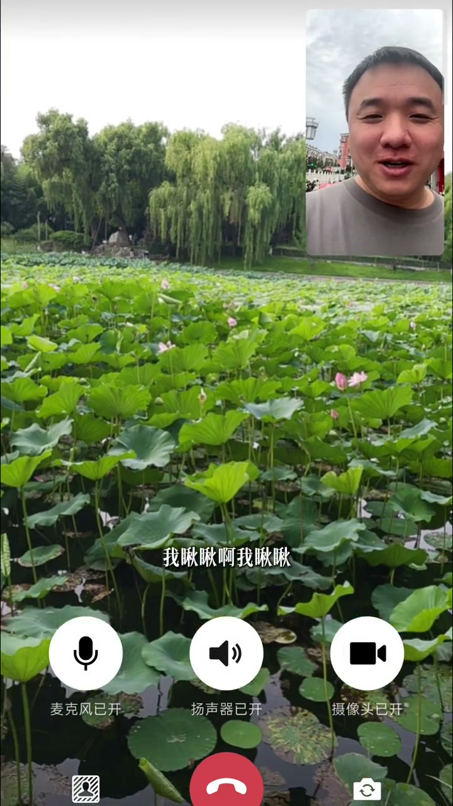
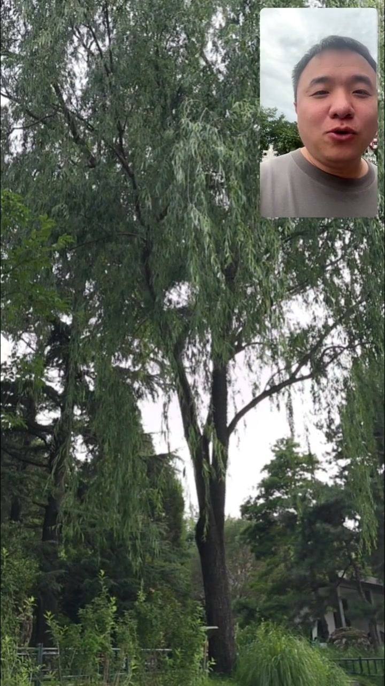
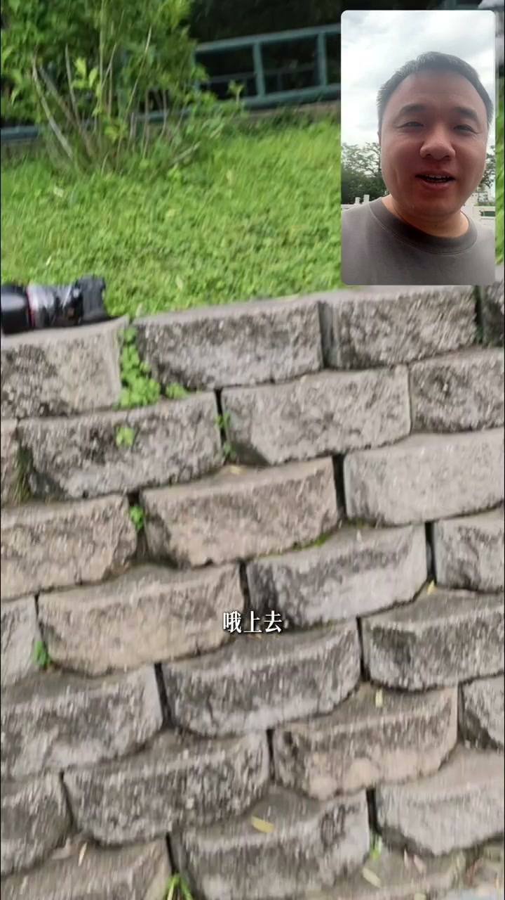
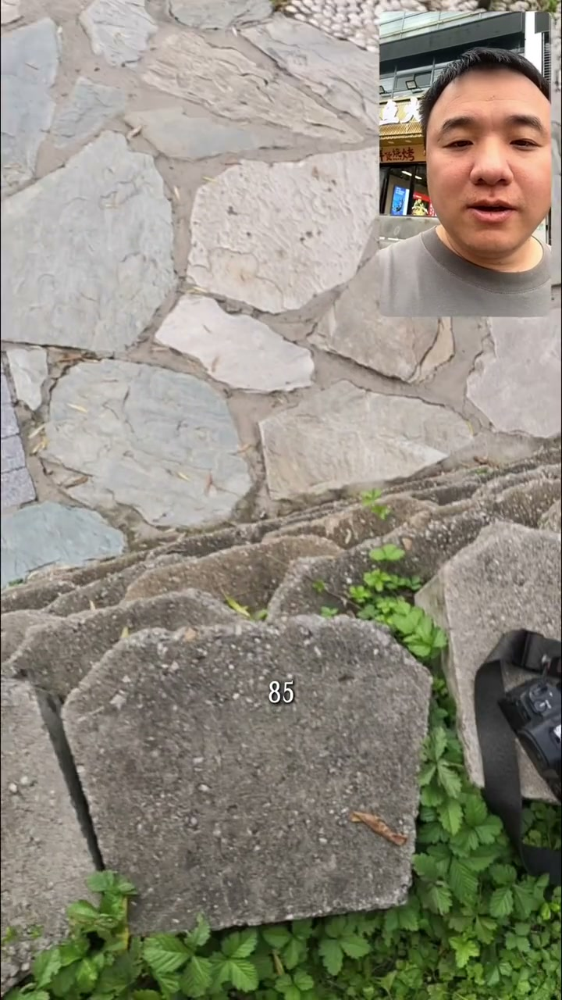
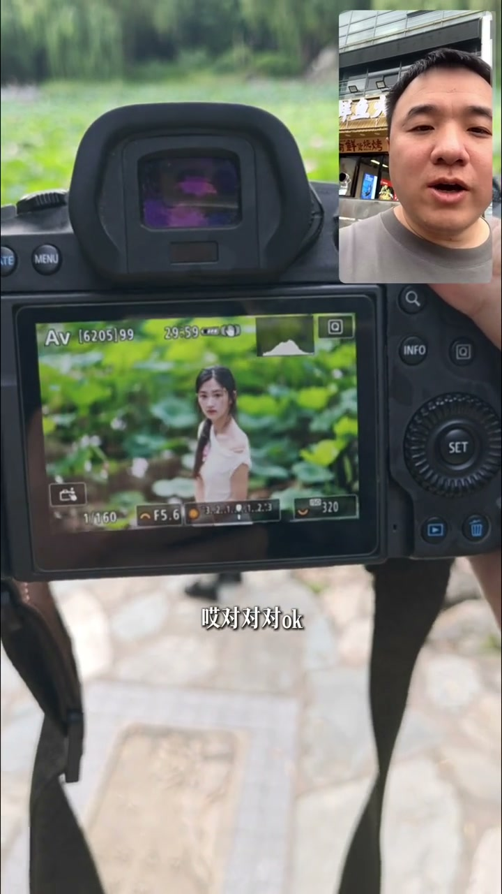
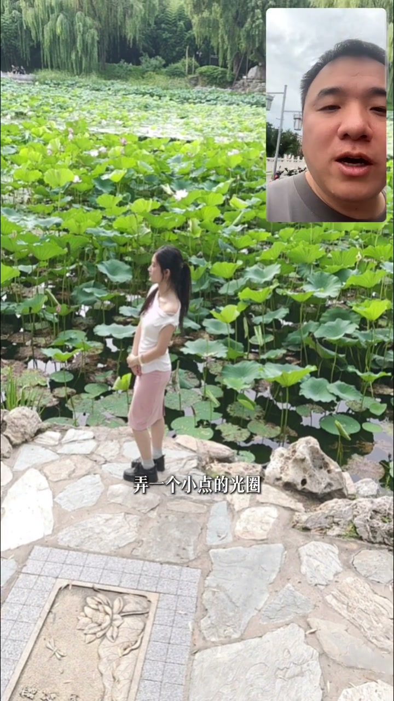

第一步：找高点站上去
00:00“老师，这荷花怎么拍啊，这有一片。”——这附近有没有什么高一点的地儿啊？
00:11高点：能不能站高一点？这整块土坡，站上去——高机位是第一步。

[00:06] 找高一点的地儿：机位决定背景
Find higher ground: the camera position decides the background

[00:12] 站上土坡，高机位俯拍
Step onto the mound for a high top-down shot
第二步：长焦85，模特转身
00:20“有长焦啊你？”——“长焦有啊，85。”用长焦压缩背景。
00:24拿起来对着模特，“向后转”——让模特从背对转到面对镜头。

[00:17] 长焦 85mm：压缩背景
Telephoto 85mm: compressing the background

[00:24] 模特向后转，面对镜头
The model turns around to face the lens
第三步：小光圈，荷叶虚化
00:31哇塞，有了！现在整个背景就都是荷叶了——高机位+长焦立竿见影。
00:36让你弄一个小点的光圈——一定要用小光圈，反正背景拍不清楚，把荷叶虚化成一片绿色。
00:42“没问题，那我小光圈拍了啊，老师。” OK

[00:32] 背景都是荷叶：出片瞬间
Lotus leaves filling the background: the shot moment

[00:38] 小光圈：背景荷叶虚化
Small aperture: blurred lotus leaves in the background
荷花池不是拍荷花，是拍“人在荷叶里”——站高点让荷叶铺满背景，长焦压缩，小光圈虚化，三招出片。